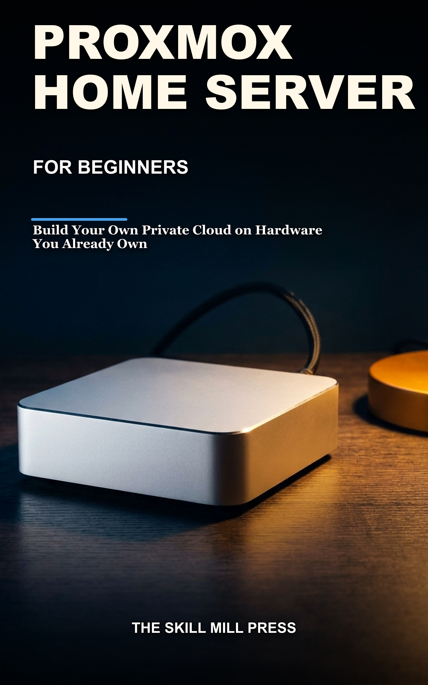

Self-hosting · The Skill Mill Press
Build your own private cloud on hardware you already own — even if you have never run a server.
You have an old computer in a cupboard and nine browser tabs that contradict each other. One says ZFS or nothing. The next says ZFS will destroy your SSD. So the machine sits there, and the subscriptions keep going out every month.
Proxmox is a professional tool given away free, and it shows. The menus assume knowledge, the errors assume knowledge, and the documentation is written by people who already know the answer. That is exactly why a guided path is worth having.
Not a plan for one. An actual Linux desktop running on that old box, about an hour after the installer finishes, before you have made a single decision that is hard to undo.
ZFS will take up to half your RAM for cache. Consumer SSDs wear out faster in a hypervisor than their ratings suggest, because the system writes constantly and most cheap drives lack power-loss protection. And the subscription notice on every login looks like a paywall but is not — the free version is the full software.
All three are in the book, with the numbers, because finding them out later is worse.
The Home Server Starter Kit.The hardware sizing worksheet from Chapter 3, the container-versus-virtual-machine decision table from Chapter 6, the backup tier checklist from Chapter 10, and the six-check diagnostic card from Chapter 12. Printable, for the desk next to the machine.
One email with the pack, and a note when the book goes live. Unsubscribe any time. No spam, ever.
If the book helped you get your system wired, a short review genuinely changes what happens to an independent title. One or two honest sentences is plenty, and it is the single most useful thing a reader can do for us.
The review link goes live here as soon as Amazon assigns the book its page. If you are reading the book now and want to review it today, search Amazon for Proxmox Home Server for Beginners and use the review button on the listing.
We send free advance copies to a small group of readers who are actually converting a van, in exchange for an honest review when the book comes out. If that is you, use the form above and mention your build.
| Related | Home Assistant Smart Home for Beginners — the same reader, and the service most people run first. Many people run Home Assistant on Proxmox, so the two books genuinely fit together. |
|---|---|
| This book | The machine underneath it: the server that hosts Home Assistant and everything else. |